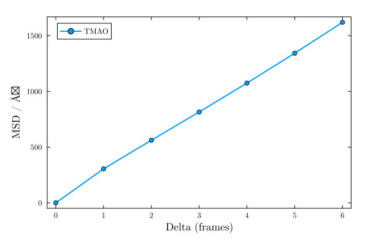

Self-diffusion coefficient
The mean_square_displacement function computes, for a set of molecules, the mean square displacement (MSD) of their centers of mass as a function of the time lag between frames. The self_diffusion_coefficient function then estimates the self-diffusion coefficient from the linear (diffusive) regime of that curve, using the Einstein relation.
Trajectory files typically store coordinates wrapped back into the simulation box by periodic boundary conditions. Computing a mean square displacement directly from such coordinates would introduce spurious jumps whenever a molecule crosses a periodic boundary between two frames. To avoid this, mean_square_displacement reconstructs, for each molecule independently, a continuous ("unwrapped") trajectory: at each frame, the periodic image closest to that molecule's position at the previous frame is chosen. This assumes that consecutive frames are much closer in time than the time it takes a molecule to diffuse across half a box length, which is the usual case.
MolSimToolkit.mean_square_displacement — Function
mean_square_displacement(
sim::Simulation,
selection::AbstractVector{<:PDBTools.Atom};
natomspermol::Integer,
maxdelta::Integer = length(sim) ÷ 10,
show_progress::Bool = true,
)Computes the mean square displacement (MSD), as a function of the time lag delta (in frames), of the centers of mass of the molecules defined by selection.
selection is expected to be the concatenation of n identical molecules, each with natomspermol atoms (the same convention used, for instance, by occupancy).
Trajectory files typically store coordinates wrapped back into the simulation box by periodic boundary conditions, which would introduce spurious jumps in a molecule's displacement whenever it crosses a periodic boundary between two frames. To avoid this, each molecule's center of mass is reconstructed into a continuous ("unwrapped") trajectory: at each frame, the periodic image closest to that same molecule's (already unwrapped) position at the previous frame is chosen. Since consecutive frames are assumed to be much closer in time than the time it takes a molecule to diffuse across half a box length, this reconstruction is unambiguous.
Returns an OffsetArray with indices 0:maxdelta, in squared length units (typically Ų, matching the units of the input coordinates). The value at delta is the average, over all molecules and all pairs of frames separated by delta steps, of the squared displacement of the molecule's center of mass.
Use self_diffusion_coefficient to estimate the self-diffusion coefficient from the linear (diffusive) regime of the resulting curve.
Arguments
sim::Simulation: TheSimulationobject.selection::AbstractVector{<:PDBTools.Atom}: The atoms of thenmolecules considered, concatenated in sequence.
Optional keyword arguments
natomspermol::Integer: Number of atoms of each molecule. Required.maxdelta::Integer: The maximum delta-step to be considered. Defaults tolength(sim) ÷ 10.show_progress::Bool: Show progress bar. Defaults totrue.
Example
julia> using MolSimToolkit, PDBTools, MolSimToolkit.Testing
julia> sim = Simulation(Testing.namd2_pdb, Testing.namd2_traj);
julia> tmao = select(get_atoms(sim), "resname TMAO");
julia> msd = mean_square_displacement(sim, tmao; natomspermol=14, maxdelta=4, show_progress=false);
julia> msd[0]
0.0
julia> msd[4]
1074.6758528050218
MolSimToolkit.self_diffusion_coefficient — Function
self_diffusion_coefficient(
msd::AbstractVector;
dt::Real = 1.0,
dim::Integer = 3,
mindelta::Integer = 1,
maxdelta::Integer = lastindex(msd),
)Estimates the self-diffusion coefficient from a mean-square-displacement curve msd, as computed by mean_square_displacement, using the Einstein relation MSD(t) = 2 * dim * D * t.
The coefficient is obtained as the slope of an ordinary least-squares fit of msd[delta] against t = delta * dt, for delta in mindelta:maxdelta, divided by 2 * dim.
No unit conversion is performed: 2 * dim is a dimensionless factor, so D comes out in [msd units] / [dt units]. In particular, if msd is in Ų (as returned by mean_square_displacement, for coordinates in Å) and dt is given in ps, the returned coefficient is in Ų/ps. Convert it to other units (e.g. cm²/s) yourself if needed.
Only a limited range of delta typically falls in the diffusive (linear) regime: very short times are dominated by ballistic motion, and very long times become noisy, since fewer pairs of frames are available to average over as delta approaches the length of the trajectory. Inspect the msd curve (for instance, by plotting it) to choose mindelta and maxdelta accordingly.
Arguments
msd::AbstractVector: The mean-square-displacement curve, as computed bymean_square_displacement.
Optional keyword arguments
dt::Real: The time interval between consecutive frames of the trajectory used to computemsd, in whatever time unit is desired for the output (e.g. ps). Used to convertdelta(in frames) into that time unit. Defaults to1, that is,deltais used directly, and the resulting units ofDare squared-length per frame.dim::Integer: The dimensionality of the diffusion process. Defaults to3(three-dimensional diffusion).mindelta::Integer: The smallestdelta(in frames) included in the fit. Defaults to1, excluding the trivialdelta = 0point.maxdelta::Integer: The largestdelta(in frames) included in the fit. Defaults tolastindex(msd), that is, the whole curve.
Example
julia> using MolSimToolkit, OffsetArrays
julia> msd = OffsetArray([0.0, 2.0, 4.0, 6.0, 8.0], 0:4); # a purely diffusive MSD, dt=1, dim=3
julia> self_diffusion_coefficient(msd)
0.3333333333333334
Example: self-diffusion of TMAO
Here we use the MolSimToolkit.Testing test data, a short NAMD trajectory of a protein solvated by water and TMAO, and compute the mean square displacement of the TMAO molecules:
using MolSimToolkit, PDBTools, MolSimToolkit.Testing, Plots
sim = Simulation(Testing.namd2_pdb, Testing.namd2_traj)
tmao = select(get_atoms(sim), "resname TMAO")
msd = mean_square_displacement(sim, tmao; natomspermol=14, maxdelta=6, show_progress=false)7-element OffsetArray(::Vector{Float64}, 0:6) with eltype Float64 with indices 0:6:
0.0
305.31942757003065
561.857553301724
⋮
1342.8741869860935
1620.2466769513944plot(MolSimStyle,
0:6, parent(msd), # parent(msd) is required for msd is an OffsetArray.
xlabel="Delta (frames)", ylabel="MSD / Ų",
linewidth=2, marker=:circle,
label="TMAO",
)
Estimating the self-diffusion coefficient
The self_diffusion_coefficient function fits a straight line to (a chosen range of) the MSD curve, and returns the self-diffusion coefficient obtained from its slope via the Einstein relation, MSD(t) = 2 * dim * D * t:
D = self_diffusion_coefficient(msd)43.699843196029406By default the whole curve (except the trivial delta = 0 point) is used in the fit. The dt keyword converts delta from frames into physical time units, for instance self_diffusion_coefficient(msd; dt=0.1) if consecutive frames are separated by 0.1 ns, which would return D in units of Ų/ns.
Only a limited range of delta typically falls in the diffusive (linear) regime: very short times are dominated by ballistic motion, and very long times become increasingly noisy, since fewer pairs of frames remain available to average over as delta approaches the length of the trajectory. Always inspect the msd curve (as plotted above) before trusting a fit, and use the mindelta and maxdelta keywords of self_diffusion_coefficient to restrict the fit to the region that actually looks linear.
As above, the trajectory used here is very short (20 frames), so this estimate is shown only for illustration: with longer, production-quality trajectories, a clear diffusive regime should be identifiable in the MSD curve before fitting.